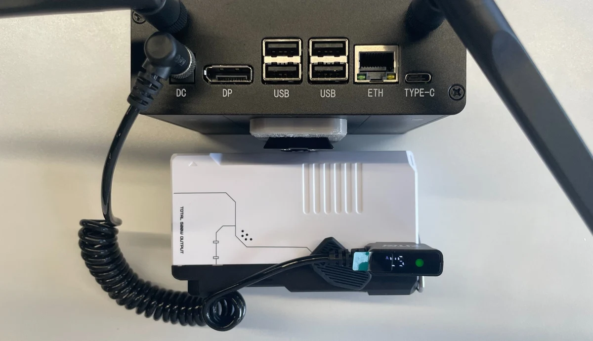

想解决什么
多路相机和多个设备一起工作时，现场操作者需要迅速判断画面、校准和录制状态。回到工作台，同一条录制还要能查找、回放、合包和检查质量。
怎么做
- Jetson 后端集中处理录制、建图定位和后处理，前端共用同一套项目状态。
- 手机端提供三路 WebRTC 总览、在线校准和开停录制。Qt 桌面端负责回放、评分和优化。
- 分布式录制先各自落盘，再按需回传与合包。现场控制与后续数据处理可以分别进行。

多路相机和多个设备一起工作时，现场操作者需要迅速判断画面、校准和录制状态。回到工作台，同一条录制还要能查找、回放、合包和检查质量。